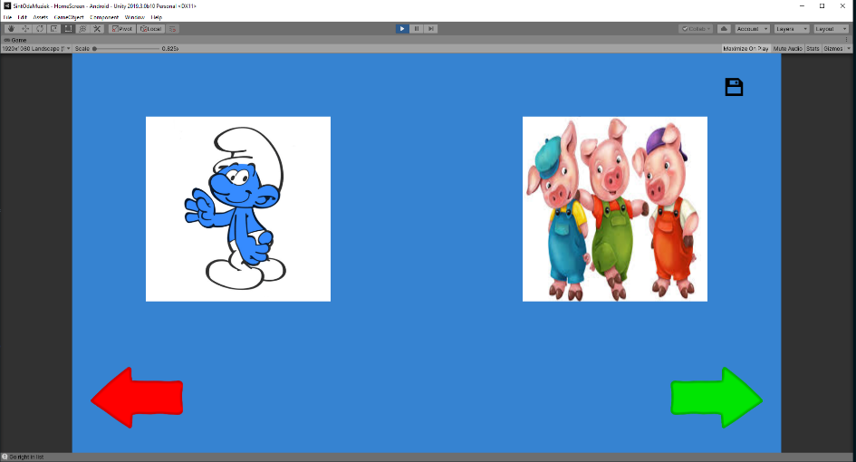
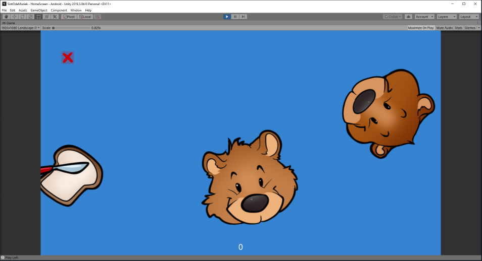
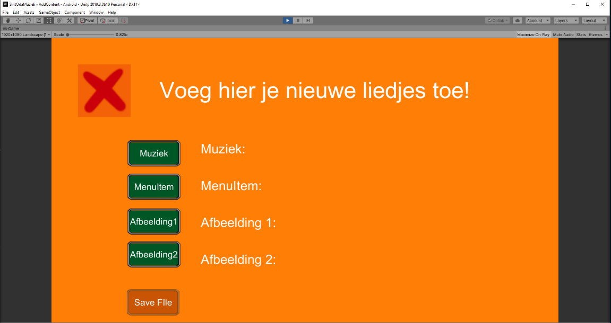

Dienstencentrum Sint Oda organiseerde op 23 november 2019 een hackaton die in het teken stond van hun bewoners. Het doel van deze hackaton was om spelapplicaties te bouwen die aangepast waren aan de noden en beperkingen van de bewoners. Samen met juniorcollega’s Robin Braibant en Guiseppe Colomba maakten wij deel uit van een team dat één van de acht casussen uitwerkte.
Applicaties worden steeds complexer en krijgen steeds meer functionaliteit. Ook spelletjes kennen een gelijkaardige evolutie. Toch is deze evolutie niet voor iedereen even positief. Bij dienstencentrum Sint Oda merkten ze op dat de spelletjes die vandaag de dag op de markt beschikbaar waren, niet beantwoordden aan de specifieke noden van hun bewoners. Door de fysieke en/of mentale beperkingen van hun bewoners zijn deze spelletjes vaak te snel om te volgen of te moeilijk om te begrijpen. Dit brengt frustraties met zich mee waardoor de spelletjes een omgekeerd effect hadden op de bewoners.
Met deze insteek organiseerde Sint Oda een hackaton in samenwerking met Hogeschool PXL. Ze hadden acht casussen uitgewerkt waar acht interdisciplinaire teams mee aan de slag konden gaan. Een team bestond namelijk niet alleen uit IT’ers, maar ook uit studenten van Elektronica-ICT (PXL-Tech), grafisch ontwerpers, ergotherapeuten, muzikanten enzovoort. Ons team bestond uit drie studenten IT, een studente Elektronica-ICT en een ergotherapeut. Wij kregen de casus van Mieke toegewezen.
Applicaties worden steeds complexer en krijgen steeds meer functionaliteit. Ook spelletjes kennen een gelijkaardige evolutie. Toch is deze evolutie niet voor iedereen even positief.
De hackaton vond plaats in de turnzaal van het dienstencentrum. Eenmaal aangekomen werden de deelnemende teams warm onthaald met een ontbijt. Om 9.00u ging de hackaton van start. Elk team kreeg de nodige ruimte en ondersteuning om de casus uit te werken. Niet alleen kregen de teams ondersteuning van de lectoren van PXL, maar ook van de begeleiders van Sint Oda. Bovendien kregen de teams ook bijstand van medewerkers van het bedrijf FireWolf Studios. Dit bedrijf is gespecialiseerd in het ontwikkelen van learning games voor bedrijven. Daarnaast kwamen ook de bewoners met hun begeleiders even op bezoek voor een korte kennismaking.
Eerst werd er aan de teams gevraagd om een schets te maken van de applicatie die ze gingen bouwen. Zo konden de begeleiders en lectoren feedback geven om ervoor te zorgen dat er met alle beperkingen rekening werd gehouden en dat het eindproduct volledig op maat zou zijn van de bewoners. Dankzij de interdisciplinaire samenstelling van de teams ontstond er een dynamische wisselwerking waarin veel ideeën en mogelijke uitwerkingen naar boven kwamen.
Vervolgens was het tijd om te starten met het ontwikkelen van de spelletjes. De teams kregen tijd tot de middag om hun product te ontwikkelen. Ons team ontwikkelde een soort van visuele MP3-speler voor Mieke. Deze bewoonster wou zelf haar muziek kunnen kiezen en beluisteren, maar had door haar motorische en mentale beperkingen veel moeite met het gebruiken van de bestaande applicaties, zoals Spotify, YouTube en andere applicaties. De applicatie werd gebouwd in Unity, een platform dat de gebruikers toelaat om 2D- en 3D-toepassingen te ontwikkelen.
Om 12.00u werd de hackaton onderbroken voor een middagpauze. Alle aanwezigen werden getrakteerd op frietjes. Na een deugddoende pauze was het terug tijd om verder te gaan met de orde van de dag. De namiddag werd ingeleid door een inspirerende sessie rond het ontwikkelen van spellen door Firewolf Studios. Daarnaast kregen de teams ook tips en tricks mee die ze konden toepassen in hun casus. Hierna konden de teams terug aan de slag gaan.
De hackaton liep op zijn einde en het was tijd om de verschillende resultaten te bekijken. Elk team kwam de casus waaraan ze gewerkt hadden pitchen, samen met het resultaat na een dag hacken. Het resultaat van ons team was een applicatie met twee grote knoppen. Aan de hand van pijltoetsen kon er tussen liedjes gekozen worden en wanneer er op de grote knop gedrukt werd, begon het liedje af te spelen en werden er afbeeldingen getoond die een link hadden met het liedje.
De resultaten werden beoordeeld door de lectoren van PXL, de begeleiders van Sint Oda en de medewerkers van Firewolf Studios. Zo goed als alle teams hadden een werkend prototype, wat de verwachtingen van de jury oversteeg. Om de hackaton af te sluiten werden er nog enkele dankwoorden uitgedeeld en kregen alle deelnemende teams een cadeautje van de bewoners van Sint Oda als dank voor hun inzet.
Deze hackaton was een heel leuke en vooral leerrijke ervaring voor mezelf. Zelf heb ik vooral mee geholpen om de logica te ontwikkelen in Unity. Hierdoor konden we ervoor zorgen dat de applicatie de gewenste functionaliteit had. Het uitdagende aan deze hackaton was niet zo zeer om een werkend prototype op te leveren, maar vooral de beperkingen waar we rekening mee moesten houden. Wanneer je als programmeur een applicatie ontwikkelt, wil je graag nuttige en zinvolle functionaliteiten toevoegen om ervoor te zorgen dat de applicatie zoveel mogelijk toegevoegde waarde heeft voor de klant. In dit geval moesten we zoveel mogelijk functionaliteit achterwegen laten om ervoor te zorgen dat de applicatie heel duidelijk was en simpel van voorstelling. Ook functionaliteiten zoals multi-finger gestures zijn zaken die afgeblokt moesten worden, omdat de bewoners hier niet mee overweg kunnen en zo een applicatie per ongeluk kunnen afsluiten of verwijderen.
Het uitdagende aan deze hackaton was niet zo zeer om een werkend prototype op te leveren, maar vooral de beperkingen waar we rekening mee moesten houden.
Verder was het ook heel aangenaam om in een interdisciplinair team te werken. Door deze dynamische mix konden alle disciplines elkaar aanvullen en versterken om zo een mooi eindresultaat op te leveren waar elk teamlid evenveel aan heeft kunnen bijdragen. Ook de samenwerking met de lectoren van PXL en de begeleiders van Sint Oda was boeiend omdat zij hun ervaringen en feedback konden delen vanuit hun werkdomein. Daarnaast gaf de kennismaking met de bewoners zelf een extra dimensie aan de hackaton aangezien het voor deze mensen was waarvoor we een applicatie aan het ontwikkelen waren. Door de ontmoeting kregen we ook de kans om de bewoners te observeren en extra vragen te stellen aan de begeleiders van de bewoners zodat we de applicatie helemaal op maat konden maken.
Ik heb deze activiteit gekozen omdat het een atypische activiteit is. Het was geen doorsnee hackaton, maar eerder een zinvol initiatief met als doel op maat gemaakte spelletjes op te leveren die de bewoners daadwerkelijk kunnen gebruiken en waardoor ze zich volledig kunnen ontplooien. Het was ontroerend om te ervaren hoe teams met verschillende disciplines zich met veel (em)passie inzetten om een mooi eindresultaat op te leveren. Tijdens de hackaton die de PXL organiseerde op 20 en 21 februari van dit jaar hebben we de kans gehad om ons prototype verder uit te werken. Hierdoor hebben we ervoor kunnen zorgen dat er extra liedjes en afbeeldingen ingeladen kunnen worden door de begeleiders. Daarnaast hebben we het spelelement van de bewegende afbeeldingen kunnen perfectioneren, wat ons team uiteindelijke een mooie tweede plaats opleverde.